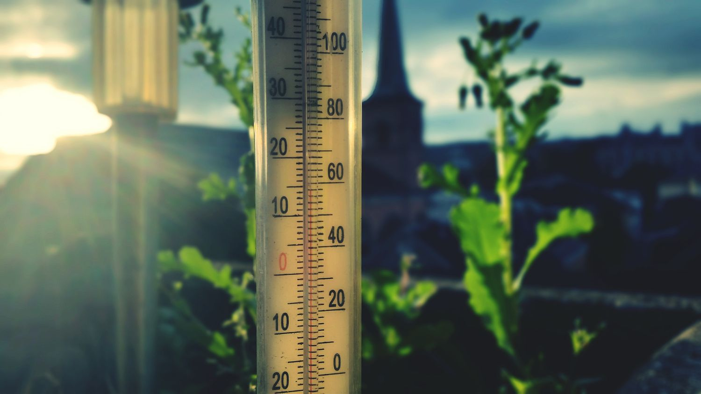

Konversi Suhu
dengan Mudah
Ubah satuan suhu dengan cepat dan mudah. Konversikan Celsius, Fahrenheit, Kelvin, dan Reamur dalam satu tempat.
Mulai KonversiRumus Konversi Suhu
Pelajari rumus dasar untuk mengubah satuan suhu.
| No. | Konversi Suhu | Rumus |
|---|---|---|
| 1 | Celsius ke Fahrenheit | °F = (°C × 9/5) + 32 |
| 2 | Fahrenheit ke Celsius | °C = (°F − 32) × 5/9 |
| 3 | Celsius ke Kelvin | K = °C + 273,15 |
| 4 | Kelvin ke Celsius | °C = K − 273,15 |
| 5 | Celsius ke Reamur | °Ré = °C × 4/5 |
| 6 | Reamur ke Celsius | °C = °Ré × 5/4 |
| 7 | Fahrenheit ke Kelvin | K = (°F − 32) × 5/9 + 273,15 |
| 8 | Kelvin ke Fahrenheit | °F = (K − 273,15) × 9/5 + 32 |